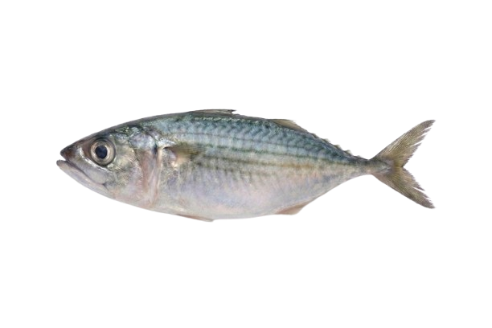
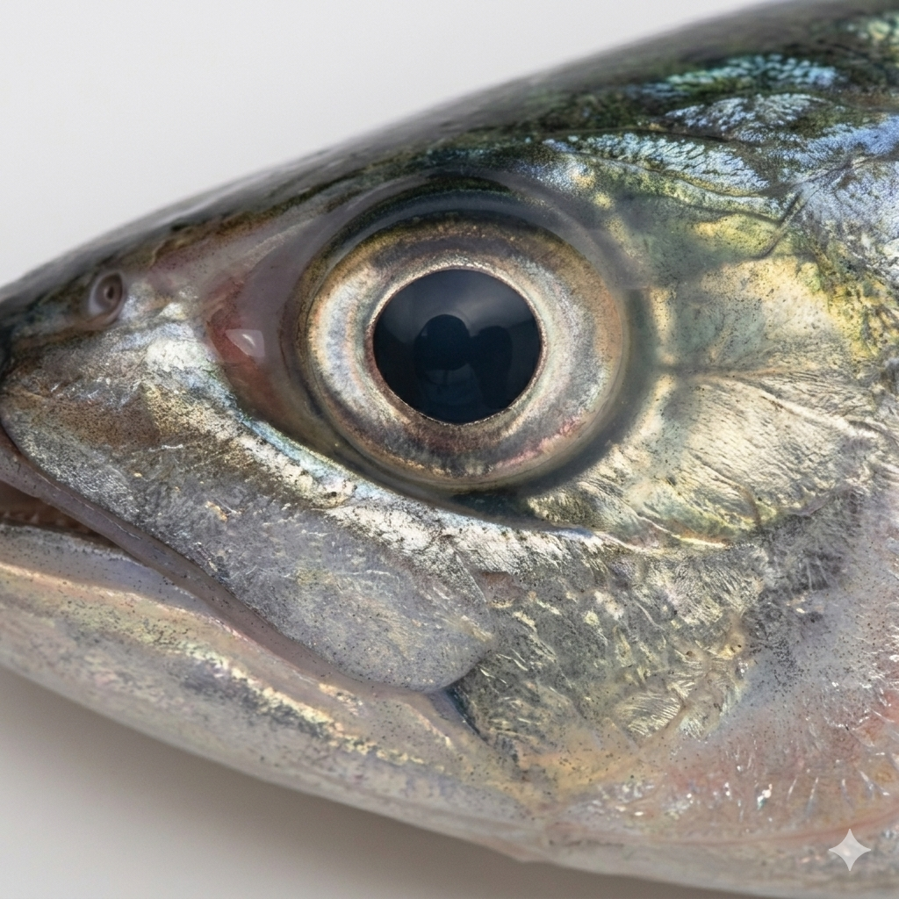
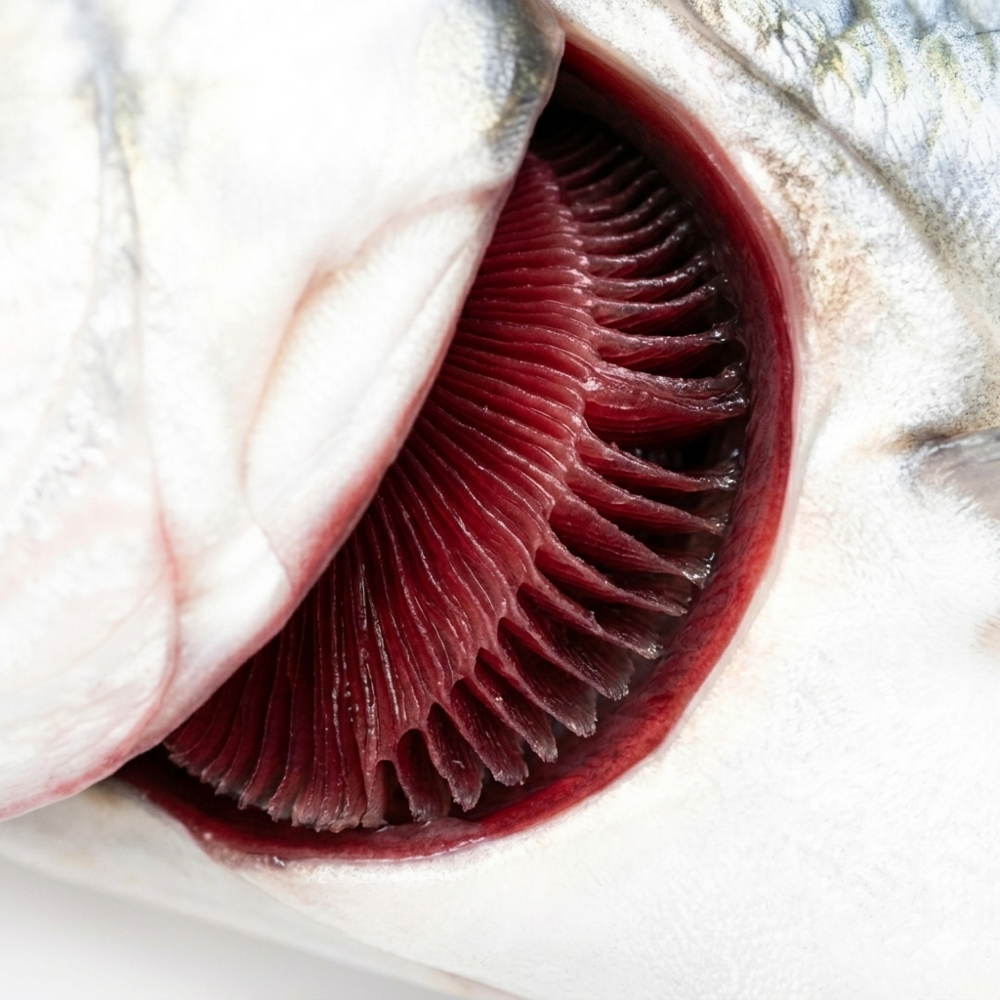
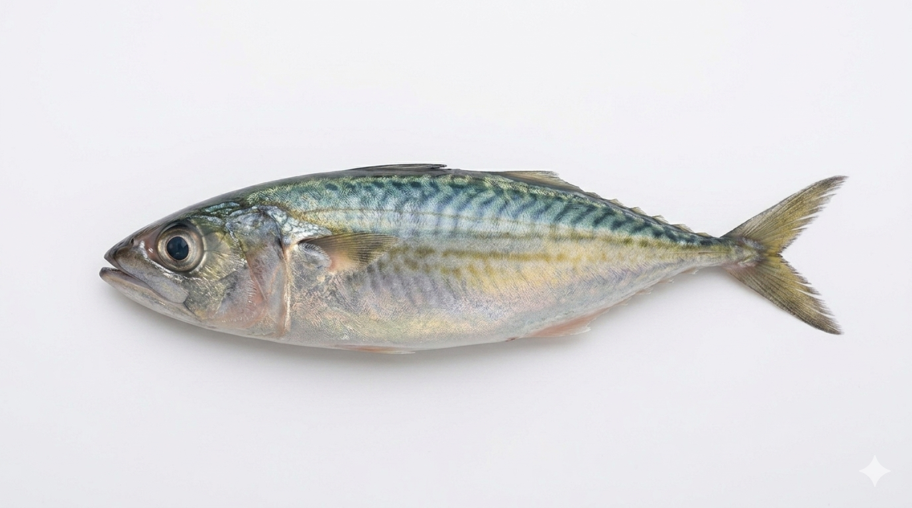
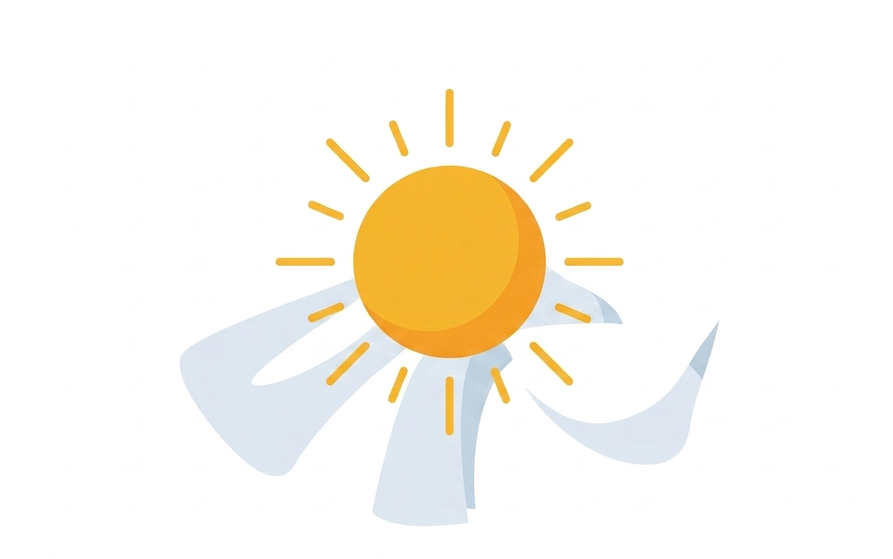

Tips Foto yang Baik
1
Foto Harus Jelas

Pastikan foto tidak blur dan pencahayaan cukup terang.
2
Fokus pada Area Mata atau Insang

👁 Mata
🩸 InsangAmbil foto close-up pada bagian mata atau insang untuk hasil terbaik.
3
Posisi Ikan Stabil

Letakkan ikan dalam posisi datar dan tidak terhalang objek lain.
4
Gunakan Latar Belakang Polos
Pastikan latar belakang polos agar sistem tidak mudah menganalisis objek lain.
5
Jarak yang Tepat

Pastikan ikan memenuhi frame, tidak terlalu dekat dan tidak terlalu jauh.
6
Cahaya Alami Lebih Baik

Gunakan cahaya alami jika memungkinkan, hindari flash yang berlebihan.